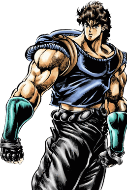
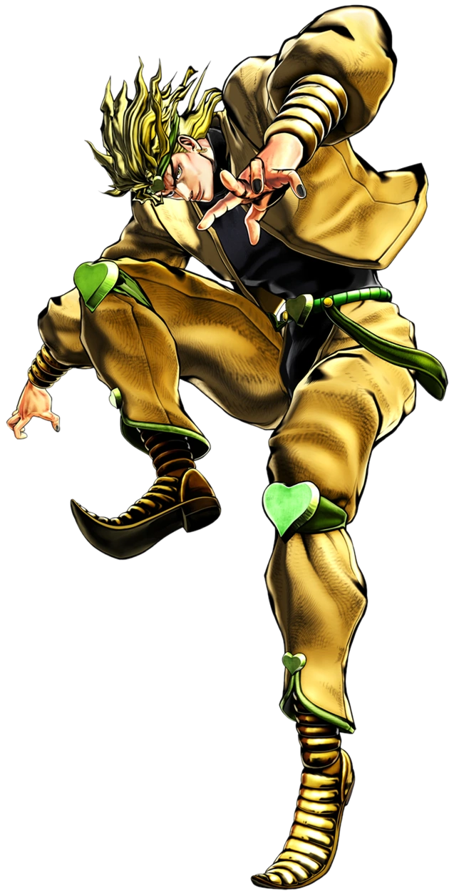
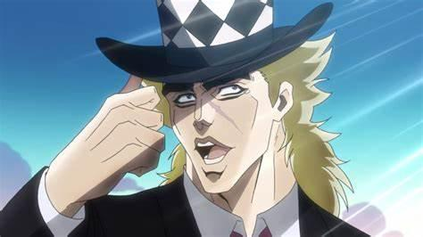
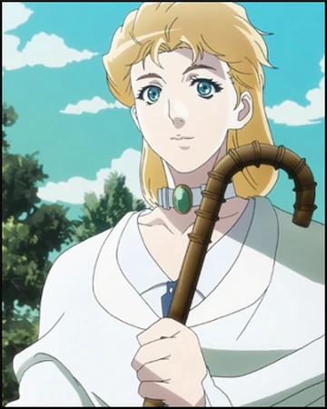

Jonathan Joestar (ジョナサン・ジョースター, Jonasan Jōsutā) es el protagonista del primer arco argumental de JoJo's Bizarre Adventure, "Phantom Blood".

Jonathan Joestar
Dio
Dio Brando (ディオ・ブランドー, Dio Burandō), llamado simplemente DIO (ＤＩＯディオ,) a partir de la Parte 3 en adelante, es el antagonista principal de la Parte 1: Phantom Blood y la Parte 3: Stardust Crusaders. También es un personaje póstumo en Stone Ocean siendo el responsable del ascenso de Enrico Pucci a la villanía.

Dio Brando
Robert E.O. SpeedWagon
Robert E. O. Speedwagon (ロバート・E・O・スピードワゴン, robāto e o supīdowagon) es un personaje aliado que aparece en Phantom Blood y en Battle Tendency. Fue introducido como antagonista, aunque después se vuelve un gran amigo y aliado de la Familia Joestar. Después de su fallecimiento, él continua apoyándolos por medio de su organización, la Fundación Speedwagon.

Robert E.O. SpeedWagon
Erina Pendleton
Erina Pendleton (エリナ・ペンドルトン, erina pendoruto) es un personaje clave que aparece en Phantom Blood y Battle Tendency. Ella es la esposa de Jonathan Joestar, la madre de George Joestar II, y la abuela y tutora de Joseph Joestar.
Aunque sus apariciones sean pocas, ella juega un papel significativo como un interés amoroso en Phantom Blood.

Erina Pendleton
W. A. Zeppeli
William Anthonio Zeppeli (ウィル・Ａ(アントニオ)・ツェペリ, Wiru Antonio Tseperi) es el aliado principal de Jonathan Joestar en Phantom Blood.
Introducido como el primer personaje de la serie en utilizar Hamon, Zeppeli actúa como mentor de Jonathan y es el primer miembro de la Familia Zeppeli en asistir a un Joestar.